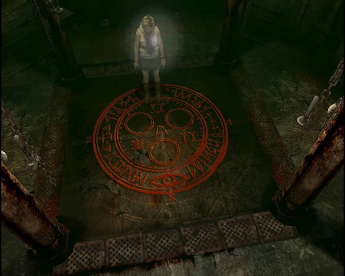

En el primer juego, la producción aprovecho esto teniendo en cuenta las limitaciones del hardware (PS1) >
La niebla y la oscuridad se han convertido en grandes simbolos dentro de la serie de Silent Hill. Estos elementos no existen solamente para intentar asustar al jugador. La niebla y la oscuridad crean una obstrucción en el horizonte, creando una condición en donde la visibilidad es limitada. En otras palabras, el limite entre cielo y tierra es oscurecido, por lo que también podemos interpretar que la linea entre los sueños y la realidad se vuelve borrosa.


El director de arte de los tres primeros juegos, Masahiro Ito, incluso se refiere al trabajar con los limites tecnicos de la Play Station 1.
To be honest, as I mentioned before, the reason I designed & made the Other World school built with wire-mesh-corridors/ceilings was that mesh texture was so much useful for repeating texture. Because we had a terrible texture limit in the PS1 era. 😅 https://t.co/neIOmulfpx
— 伊藤暢達/Masahiro Ito (@adsk4) August 28, 2022
Mientras que los elementos cómo la niebla y la oscuridad son claramente visibles, estos elementos estan producidos y presentados desde una inclusión en sus efectos tecnicos. Por ejemplo, los ruidos que producen un sentido de la atmosfera y de la realidad que expresan la valía del aspecto psicologico involucrado y aumentan la intensidad de acuerdo progresa la historia. Adicionalmente, si uno presta atención a los ángulos utilizados en la camara, puede ver que la forma en la que cambia hacía el punto de vista del protagonista puede expresar una sensación de confusión y ansiedad.


Uno de los momentos más interesantes a analizar desde una perspectiva cinematografica es la siguiente escena; el encuadre y el acompañamiento de la cámara junto con el sonido de ambiente que va en aumento nos dejan un momento dificil de olvidar.
El trabajo de esta serie está relacionado a traves de un pueblo llamado Silent Hill y su longeva tradición religiosa que se remonta a la epoca de los nativos originarios. Cómo es de esperarse temas prevalentes como el otro mundo, resurrección de los muertos, así cómo elementos de lo oculto y otros fenomenos, varios objetos religiosos como amuletos o elementos utilizados en rituales aparecen a lo largo del juego.
Hay objetos que son referenciados de varias religiones y folclores y, por supuesto, algunos que son originales de la religión dentro del juego. Estos objetos religiosos dan una complejidad unica a la historia. Examinemos esto con algunos ejemplos. Si uno adquiere más información en cuanto a este tema, podría apreciar un poco más la profundidad que trata está serie.
Estos dos simbolos son engañosamente similares. En el talisman del tercer juego, el Sello de Metatrón que aparece en el primer juego, aparece inscripto.

Un liquido rojo que hace aparación en el primer y tercer juego. Hecho en base de una hierba medicinal, parece tener el efecto de repeler espiritus malignos.

Un talisman que aparece en el primer juego a manos de una lider religiosa. Tiene la habilidad de romper la continuidad de los lazos que rodean a Alessa.

Un libro sobre la historia de la ciudad. Aparece en el segundo juego, Restless Dreams, y en el tercer juego; los detalles que revela se remotan a la epoca precolombina.

Objetos utilizados en rituales; son requeridos para el final "Renacimiento" en el segundo juego. Supuestamente, tienen el poder de revivir a los muertos.